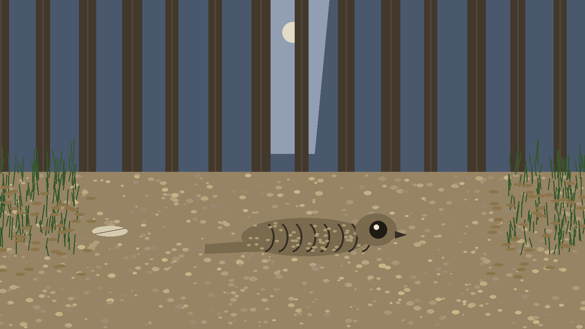
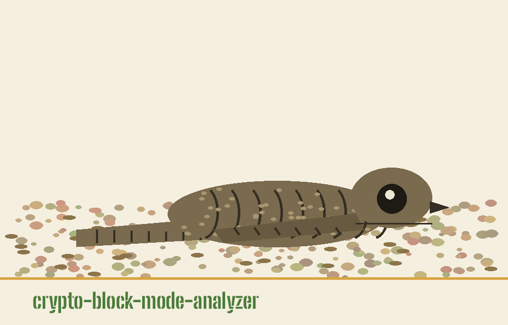
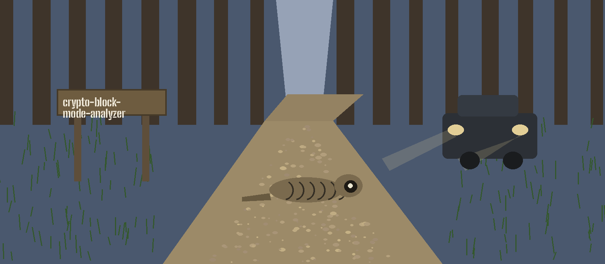
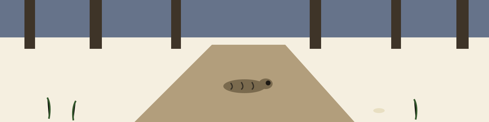

crypto-block-mode-analyzer: The Nightjar and the Forestry Road
Theme: The Nightjar and the Forestry Road. Headings in Big Shoulders Stencil, reading text in Archivo.



One File, in Hex
Input is a file. File is required. File holds hex text. Surrounding space is stripped. Hex is decoded to bytes. Missing file exits 1. Bad hex exits 1. Other read faults exit 1. The positional is ciphertext_file, given in the preserved record below in parser order with the controls.
Blocks Are Counted, Not Values
Bytes are cut into blocks. Block size is set by the caller. Default is 16 bytes. A trailing short block stays in the count, and a short block can never match a full block, which is a drag on the score that this page states plainly. Blocks are then counted by value. The score counts blocks, not distinct values, so every block inside a repeated value counts. The ratio is repeated blocks over total blocks.
The ECB Test, and Its Strict Threshold
The verdict needs a ratio above the threshold. The default threshold is 0.9. Strictly above means strictly above, and equal does not pass. The printed line for a pass is short: Likely mode: ECB. The printed line for a fail is short: ECB not detected. No stronger claim is made.
CTR Is Optional and Unseeded
The CTR test is optional. The flag is --enable_ctr_test. An absent flag prints a skipped line, and a present flag runs sampling. The file must reach block size times sample size; a short file warns and returns no detection. The default sample size is 1000. Blocks are sampled at random and the sampling is unseeded, so two runs may draw differently and two runs may disagree. Byte frequencies are counted per position, variance is worked out per position, and every variance must fall below 10. That 10 is fixed and is not derived from the sample. A pass prints Likely mode: CTR and a fail prints CTR not detected.
Undetermined Is a Result
When neither test passes, the ending is undetermined. CBC, CFB, and OFB cannot be told apart on ciphertext alone, and this page does not pick one and does not rank them. Guards stand as follows. Block size must be positive: zero exits 1 and negative exits 1. A length that is not a multiple warns only and the run continues after that warning. A completed analysis exits 0.
Install Truth
The install line is shown in the preserved record below as printed, with its fault flagged beneath it there. No library step is needed. The code uses the standard library only, and the requirements file says so itself. Controls are listed in parser order: help is -h, the positional is ciphertext_file and it is required, then --block_size as a whole number with default 16, then --threshold as a decimal number with default 0.9, then --sample_size as a whole number with default 1000, then --enable_ctr_test as a flag, default off.
Install line, flagged
Flagged where it stands, and corrected nowhere in this README: the clone line above names a different organisation account altogether, the first of two occurrences of that name counted in the governing prose.
Record preserved from the README
# crypto-block-mode-analyzer
Analyzes ciphertext for the likely block cipher mode without requiring the key. It reports ECB when block repetition is found, reports CTR only from an optional statistical byte frequency test, and otherwise reports an undetermined outcome: CBC, CFB, and OFB cannot be told apart from each other on ciphertext alone. - Focused on Basic cryptographic operations
## Install
`git clone https://github.com/ShadowStrikeHQ/crypto-block-mode-analyzer`
## Usage
`./crypto-block-mode-analyzer [params]`
## Parameters
- `-h`: Show help message and exit
- `--block_size`: No description provided
- `--threshold`: No description provided
- `--sample_size`: No description provided
- `--enable_ctr_test`: Enable statistical tests for CTR mode, which is time intensive.
## License
Copyright (c) ShadowStrikeHQ
Facts from the code, stated in the prose
This record names: ciphertext_file, --block_size, 16, --threshold, 0.9, --sample_size, 1000, --enable_ctr_test, Likely mode: ECB, ECB not detected, Likely mode: CTR, CTR not detected, variance, 10, standard library only, exits 0, exits 1, python3 main.py.